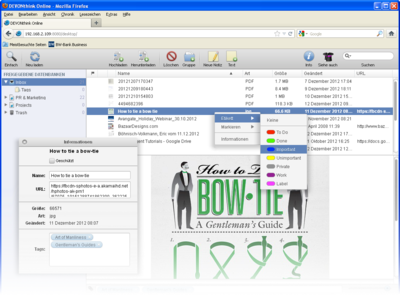
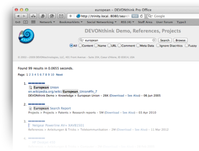
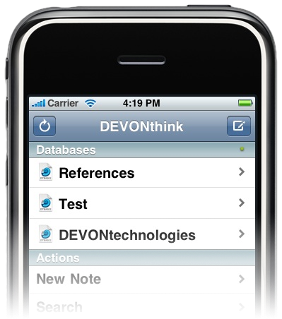

|
|
|
Web sharing |
|
DEVONthink Pro Office allows you to give others on the local network access to your databases using a standard web browser on any operating system (including Windows and Linux). The embedded web server provides an interactive web interface that allows you to browse, search, and manipulate all shared open databases, preview documents, and add notes to the inbox. Alternatively, it offers a simple search-engine-like search for users who don't need all the functionality of the full web interface. Sharing a database By default, DEVONthink Pro Office does not share any database. To share a database, open it, then show its properties using File > Database Properties , and check Shared Database. Uncheck this property to keep this database from being shared. To find out the address of your shared databases, open Preferences > Server . Here, you can start and stop the web server and also find your web server's address. When the web server is running, you can find DEVONthink Pro Office on any computer on your network in the Bonjour menu of your web browser. Securing your shared databases To keep your data away from prying eyes, make sure to either enter a user name and password in Preferences > Server or set an individual password for each shared database in its Database Properties . The general user name and password is used when no password is set for a database. Using the interactive web interface The interactive web interface imitates the look-and-feel of a standard Mac application in many ways. Contrary to a static web site, it only loads once; clicking buttons or links does not reload the whole page but dynamically updates it. When the web interface is loaded, don't use the Back and Forward button of your web browser for navigation; use the user interface DEVONthink Pro Office provides.  The web interface is divided into four areas which can be individually resized: toolbar, sidebar, documents pane, and preview pane. When loaded, the sidebar shows a list of all shared databases. Click the disclosure triangle in front of each database name to show the groups it contains, just like you would do in the Finder. Select any group to show its contents in the upper right-hand pane, and select any document to show a preview, if possible, in the lower right-hand pane. This is similar to browsing mailboxes and email messages in Apple Mail. Organizing your data: To rearrange your groups and documents, drag them to other groups or databases just like you would do in DEVONthink Pro Office. Double-click their name to rename them, and use the Delete toolbar icon to move them to the trash. Click the Info toolbar icon to show the info panel, which allows you to change the name and URL of the item, lock or unlock it, and add or remove tags. You can also add or remove tags in the tags bar below the preview pane. Use the context menu (see below) to change an item's label, mark it read or unread, flagged or unflagged, or locked or unlocked. Contextual menu and toolbar: Like in native Mac applications, you can activate the contextual menu by right-clicking or clicking with the ⌃Control key held. The contextual menu contains useful commands tailored for the item you're pointing at. In addition, the toolbar contains a number of other useful buttons:
After using the search field or the See Also button, the contents of the items pane is replaced with the search results sorted by relevance. Click the pane's close button to return to the regular display. Using the simple web interface To switch to DEVONthink Pro Office's search-only web interface, click the Simple button in the interactive interface; to go back, use the Browse button next to the Search button.
 DEVONthink Pro Office's web interface works just like any other search engine. Enter your search words, select your search options, and click Search. The search options resemble those also found in the Search window. You'll receive a ranked list of search results with options to view or download the found documents. Using the iPhone interface Accessing your database from an iPhone or iPod touch is similar to connecting to the web interface. However, DEVONthink Pro Office gives you an interface tailored to the device's screen size. It loads faster, transfers less data over the network, and is optimized for iOS-like usage like tapping.  To access your database from the device, simply enter your database's address (check in Preferences > Server), with JavaScript switched on in Safari for Mobile's preferences. You're automatically sent to the iOS-optimized web app. If, by chance, it does not work, e.g., because you have deactivated JavaScript, add "/iphone" (front slash-iphone) to your database's address. The optimized web application simulates the look and feel of a native iOS application. Tap items, and use the Back button to navigate your shared databases, add new notes to the global inbox, and search all databases just like you would do on the Mac.
Accessing your data over the Internet To access your database from the Internet, you need to make your Mac "visible" to the outside world. In general, when you a using a DSL or cable modem, you are also using a router. Routers create an intranet that your Mac is connected to and "route" traffic between the Internet and your personal intranet. Now, you need to create a route from the outside leading to the Mac sharing your database. This offers a port on the outside that is directly connected to the port on which DEVONthink Pro Office is publishing. If everything goes well, you will be able to access your database using an address like: http://xxx.xxx.xxx.xxx:port, where xxx.xxx.xxx.xxx is your current IP address. (Note: This is your router's address, not your Mac's.) Next, port the outside port number leading to your published database. Using Lighthouse: An easy way to configure port forwarding is to use the shareware utility Lighthouse. Usually, Lighthouse automatically finds your router and configures port forwarding for whatever ports you want. It installs as a menu extra and allows you to configure multiple settings for different applications. To set up Lighthouse for DEVONthink Pro Office, follow the instructions that come with Lighthouse. To download Lighthouse, and to learn more about how it works and how to set it up for your network, please refer to Lighthouse's homepage. Port forwarding done manually: The following is only a rough outline of the steps needed to configure port forwarding manually. The precise way to do it varies from router to router. You will need to consult the manual for your router in order to determine exactly how to set things up. To configure port forwarding, follow these steps:
Setting up port forwarding can be tricky, but the difficult part is mainly in determining how to configure your particular router. If you are in doubt, google your router's name and combine it with a seach for "port forwarding" or "port mapping." |